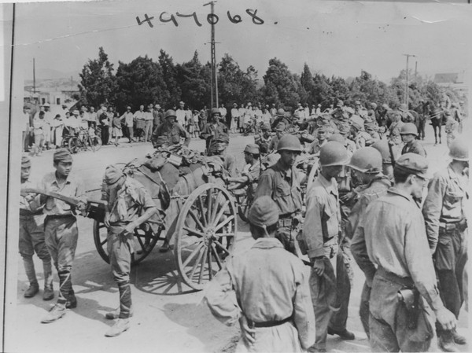

Perang Dunia
Perang Dunia I dan II adalah peristiwa penting yang mengubah jalannya sejarah dunia. Kedua perang ini melibatkan banyak negara dan menyebabkan perubahan besar dalam politik dan masyarakat.
Perang Dunia I
Perang Dunia I, yang juga dikenal sebagai "Perang Besar," berlangsung dari tahun 1914 hingga 1918. Perang ini dipicu oleh berbagai faktor, termasuk nasionalisme, aliansi politik yang kompleks, imperialisme, dan ketegangan militer di Eropa. Pembunuhan Archduke Franz Ferdinand dari Austria pada 28 Juni 1914 menjadi pemicu langsung yang memicu konflik berskala besar ini.
Perang ini melibatkan dua aliansi utama:
- Sekutu: Termasuk negara-negara seperti Prancis, Inggris, Rusia, Italia, dan Amerika Serikat.
- Kekuatan Sentral: Termasuk Jerman, Austria-Hongaria, dan Kekaisaran Ottoman.
Tahapan Perang
- Munculnya Perang (1914): Serangan Jerman ke Belgia dan Prancis, termasuk Pertempuran Marne.
- Perang Parit (1915-1916): Perang parit menjadi taktik utama, termasuk Pertempuran Verdun dan Somme.
- Keterlibatan AS (1917): AS bergabung setelah serangan kapal selam Jerman terhadap kapal sipil dan pengumuman Zimmermann.
- Akhir Perang (1918): Keruntuhan Kekuatan Sentral dan penandatanganan gencatan senjata pada 11 November 1918.
Dampak Perang
Perang Dunia I menyebabkan korban jiwa lebih dari 16 juta orang dan perubahan besar dalam geopolitik. Perjanjian Versailles (1919) menghukum Jerman dan mempengaruhi ketegangan yang mengarah ke Perang Dunia II.
Warisan perang ini mencakup pembentukan Liga Bangsa-Bangsa, pergeseran peta politik di Eropa, dan dampak psikologis yang mendalam pada masyarakat.
Perang Dunia II
Perang Dunia II, yang merupakan konflik global terbesar dalam sejarah, berlangsung dari tahun 1939 hingga 1945. Perang ini dipicu oleh agresi militer dari Jerman Nazi, Jepang, dan Italia, serta ketegangan ekonomi dan politik pasca-Perang Dunia I. Invasi Jerman ke Polandia pada 1 September 1939 menjadi pemicu langsung yang memulai konflik ini.
Perang ini melibatkan dua aliansi utama:
- Sekutu: Termasuk negara-negara seperti Amerika Serikat, Uni Soviet, Inggris, Prancis, dan Tiongkok.
- Blok Poros: Termasuk Jerman, Italia, dan Jepang.
Tahapan Perang
- Awal Perang (1939-1941): Invasi Jerman ke Polandia, diikuti serangan ke Denmark, Norwegia, Belgia, dan Prancis, serta pertempuran udara dalam Pertempuran Inggris.
- Pelebaran Konflik (1941): Invasi Jerman ke Uni Soviet dan serangan Jepang terhadap Pearl Harbor yang membawa AS masuk perang.
- Perubahan Arah (1942-1943): Kemenangan Sekutu dalam Pertempuran Stalingrad dan Pertempuran Midway, yang menjadi titik balik penting.
- Akhir Perang (1944-1945): Invasi Normandia oleh Sekutu, disusul oleh kekalahan Jerman dan penyerahan diri Jepang setelah pemboman atom di Hiroshima dan Nagasaki.
Dampak Perang
Perang Dunia II menyebabkan korban jiwa lebih dari 70 juta orang, kehancuran besar-besaran, dan perubahan besar dalam tatanan dunia. Perjanjian Yalta dan Potsdam menata ulang perbatasan dan pengaruh politik di Eropa dan Asia.
Warisan perang ini mencakup pembentukan Perserikatan Bangsa-Bangsa, munculnya Perang Dingin antara AS dan Uni Soviet, serta perkembangan teknologi dan hak asasi manusia yang menjadi landasan bagi era modern.
Tokoh Sejarah
Banyak tokoh sejarah yang memiliki dampak besar terhadap perkembangan dunia, mulai dari pemimpin politik, ilmuwan, hingga seniman.
Nelson Mandela
Nelson Mandela adalah seorang tokoh pejuang kemerdekaan dan anti-apartheid dari Afrika Selatan yang terkenal karena perjuangannya melawan diskriminasi rasial. Lahir pada 18 Juli 1918, Mandela berjuang selama beberapa dekade untuk menciptakan kesetaraan di Afrika Selatan. Ia dipenjara selama 27 tahun dan kemudian menjadi presiden kulit hitam pertama Afrika Selatan pada tahun 1994.
Masa Kehidupan dan Perjuangan
- Masa Muda dan Pendidikan: Mandela lahir di Mvezo, sebuah desa di Afrika Selatan, dan mendapat pendidikan hukum di Universitas Fort Hare dan Universitas Witwatersrand.
- Bergabung dengan ANC (1944): Mandela bergabung dengan African National Congress (ANC) dan aktif dalam gerakan anti-apartheid, menentang kebijakan diskriminatif pemerintah Afrika Selatan.
- Pemenjaraan (1962-1990): Mandela ditangkap dan dijatuhi hukuman penjara seumur hidup pada tahun 1964 karena aktivitas politiknya. Ia menghabiskan 27 tahun di penjara, sebagian besar di Pulau Robben.
- Kebebasan dan Kepresidenan (1990-1999): Mandela dibebaskan pada tahun 1990 dan memimpin negosiasi untuk mengakhiri apartheid. Pada tahun 1994, ia terpilih sebagai presiden kulit hitam pertama Afrika Selatan dalam pemilu multiras pertama di negara itu.
Warisan dan Dampak
Nelson Mandela adalah simbol perdamaian dan rekonsiliasi. Setelah masa jabatannya sebagai presiden, ia terus aktif dalam memperjuangkan hak asasi manusia dan kesetaraan hingga akhir hayatnya. Warisan Mandela mencakup kontribusinya dalam menciptakan Afrika Selatan yang lebih inklusif dan pengaruhnya dalam gerakan hak asasi manusia di seluruh dunia.
Warisan Mandela juga mencakup pembentukan Nelson Mandela Foundation yang berfokus pada pengembangan sosial, kesetaraan, dan hak asasi manusia di Afrika Selatan dan di seluruh dunia.
Mahatma Gandhi
Mahatma Gandhi, yang dikenal sebagai "Bapak Bangsa" India, adalah seorang tokoh perjuangan kemerdekaan dan penganjur utama gerakan non-kekerasan. Lahir pada 2 Oktober 1869 di Porbandar, India, Gandhi memainkan peran penting dalam membebaskan India dari penjajahan Inggris melalui filosofi *ahimsa* (tanpa kekerasan) dan *satyagraha* (perlawanan tanpa kekerasan).
Masa Kehidupan dan Perjuangan
- Masa Muda dan Pendidikan: Gandhi belajar hukum di London dan mulai memahami ketidakadilan sosial selama pengalamannya di Afrika Selatan, tempat ia melawan diskriminasi rasial terhadap orang India.
- Kembali ke India (1915): Setelah kembali ke India, Gandhi memimpin berbagai kampanye melawan pajak yang tidak adil, termasuk *Salt March* (1930), yang menjadi simbol perlawanan terhadap Inggris.
- Perjuangan Kemerdekaan: Gandhi memimpin gerakan *Quit India* (1942), menyerukan kepada Inggris untuk meninggalkan India, dengan tetap mempertahankan prinsip non-kekerasan sebagai strategi utama.
- Kematian (1948): Pada 30 Januari 1948, Gandhi dibunuh oleh seorang ekstremis yang menentang visinya untuk perdamaian dan harmoni antara umat Hindu dan Muslim.
Warisan dan Dampak
Mahatma Gandhi dikenang sebagai ikon perdamaian dan non-kekerasan. Filosofinya menginspirasi gerakan hak sipil dan kebebasan di seluruh dunia, termasuk tokoh seperti Martin Luther King Jr. dan Nelson Mandela. Gandhi juga memainkan peran penting dalam memperkuat rasa persatuan nasional di India.
Warisan Gandhi mencakup kontribusinya terhadap kebebasan India, peningkatan kesadaran tentang pentingnya non-kekerasan, dan dedikasinya terhadap keadilan sosial. Hari ulang tahunnya, 2 Oktober, diperingati sebagai Hari Non-Kekerasan Internasional oleh Perserikatan Bangsa-Bangsa.
Peradaban Kuno
Peradaban kuno seperti Mesir, Romawi, dan Mesopotamia memberikan kontribusi besar terhadap kemajuan manusia di bidang ilmu pengetahuan, teknologi, dan budaya.
Peradaban Mesopotamia
Peradaban Mesopotamia, sering disebut sebagai "Cradle of Civilization" atau "Tempat Lahir Peradaban," berkembang di wilayah yang sekarang dikenal sebagai Irak, di antara Sungai Tigris dan Efrat. Peradaban ini berlangsung dari sekitar 3100 SM hingga penaklukan oleh Kekaisaran Persia pada abad ke-6 SM. Mesopotamia dikenal sebagai tempat lahir beberapa inovasi penting, termasuk tulisan, hukum, dan organisasi kota.
Ciri-ciri Peradaban
- Kota-Kota: Peradaban ini melahirkan kota-kota besar seperti Ur, Uruk, dan Babylon, yang menjadi pusat politik, ekonomi, dan budaya.
- Sistem Tulisan: Mesopotamia mengembangkan sistem tulisan kuno yang dikenal sebagai *cuneiform*, yang digunakan untuk catatan administratif, keagamaan, dan sastra seperti *Epic of Gilgamesh*.
- Sistem Hukum: Mesopotamia menghasilkan *Kode Hammurabi*, salah satu sistem hukum tertulis paling awal yang menekankan keadilan dan aturan sosial.
- Pertanian dan Irigasi: Sungai Tigris dan Efrat memungkinkan pengembangan sistem irigasi yang kompleks, mendukung pertanian dan perdagangan.
Dampak dan Warisan
Peradaban Mesopotamia memberikan pengaruh besar pada perkembangan masyarakat manusia, termasuk penemuan roda, sistem angka berbasis 60 (seperti jam), kalender, dan konsep negara kota. Sistem organisasi sosial dan hukum mereka menjadi dasar bagi peradaban-peradaban selanjutnya.
Warisan Mesopotamia tetap hidup melalui peninggalan arkeologi seperti Ziggurat Ur, artefak tulisan paku, dan konsep-konsep dasar dalam administrasi dan hukum yang terus memengaruhi dunia modern.

Peradaban Mesir Kuno
Peradaban Mesir Kuno adalah salah satu peradaban tertua dan paling berpengaruh dalam sejarah manusia. Terletak di sepanjang Sungai Nil, peradaban ini berkembang selama ribuan tahun, dimulai sekitar 3100 SM hingga penaklukan Romawi pada 30 SM. Mesir Kuno dikenal karena kontribusinya dalam bidang arsitektur, seni, sistem tulisan, dan teknologi.
Ciri-ciri Peradaban
- Pemerintahan dan Firaun: Dipimpin oleh para firaun yang dianggap sebagai dewa di bumi, Mesir Kuno memiliki sistem monarki teokratik yang kuat.
- Arsitektur Monumental: Piramida di Giza, Kuil Karnak, dan Sphinx adalah contoh karya arsitektur yang mengesankan dan menjadi simbol kekuatan peradaban ini.
- Sistem Tulisan: Mesir Kuno mengembangkan hieroglif, sistem tulisan yang digunakan untuk catatan administratif, keagamaan, dan sejarah.
- Kehidupan di Sungai Nil: Sungai Nil memainkan peran penting dalam kehidupan sehari-hari, menyediakan air untuk pertanian, transportasi, dan perdagangan.
Dampak dan Warisan
Peradaban Mesir Kuno memberikan pengaruh besar pada budaya dan ilmu pengetahuan dunia. Mereka mengembangkan kalender, sistem irigasi, pengobatan, dan praktik keagamaan yang memengaruhi peradaban lain di kawasan Mediterania.
Warisan Mesir Kuno terus hidup melalui monumen seperti Piramida dan Sphinx, serta penemuan modern seperti Rosetta Stone yang membantu mengungkap rahasia hieroglif. Studi tentang Mesir Kuno terus memberikan wawasan baru tentang sejarah manusia.
Peradaban Romawi Kuno
Peradaban Romawi Kuno adalah salah satu peradaban terbesar dan paling berpengaruh dalam sejarah dunia, yang berkembang dari sebuah kota kecil di Italia menjadi kekaisaran besar yang meliputi sebagian besar Eropa, Timur Tengah, dan Afrika Utara. Peradaban ini berlangsung dari 753 SM (pendirian Roma) hingga kejatuhannya pada 476 M (Romawi Barat) dan 1453 M (Romawi Timur/Byzantium).
Ciri-ciri Peradaban
- Pemerintahan: Peradaban Romawi melalui tiga tahap pemerintahan: kerajaan, republik, dan kekaisaran, dengan sistem hukum seperti *Hukum Dua Belas Meja* dan *Corpus Juris Civilis* yang menjadi dasar hukum modern.
- Infrastruktur: Romawi dikenal dengan jalan-jalan yang kokoh, saluran air (aqueducts), koloseum, dan bangunan monumental seperti Pantheon.
- Militer: Kekaisaran Romawi memiliki militer yang sangat terorganisir, dengan legiun Romawi menjadi simbol kekuatan dan disiplin.
- Budaya dan Teknologi: Bahasa Latin dan Yunani, filsafat, seni, arsitektur, serta inovasi teknologi seperti kubah dan beton menjadi bagian penting dari warisan Romawi.
Dampak dan Warisan
Peradaban Romawi Kuno memberikan kontribusi besar dalam berbagai bidang, termasuk hukum, pemerintahan, arsitektur, dan bahasa. Pengaruh Romawi dapat dilihat dalam sistem hukum dan pemerintahan modern, bahasa Romawi (seperti Italia, Spanyol, dan Prancis), serta konsep-konsep seperti republik dan senat.
Warisan Romawi tetap hidup melalui monumen seperti Colosseum, forum Romawi, dan reruntuhan Pompeii. Pengaruh mereka juga terasa dalam perkembangan Kekristenan, yang menjadi agama resmi Kekaisaran Romawi pada abad ke-4.